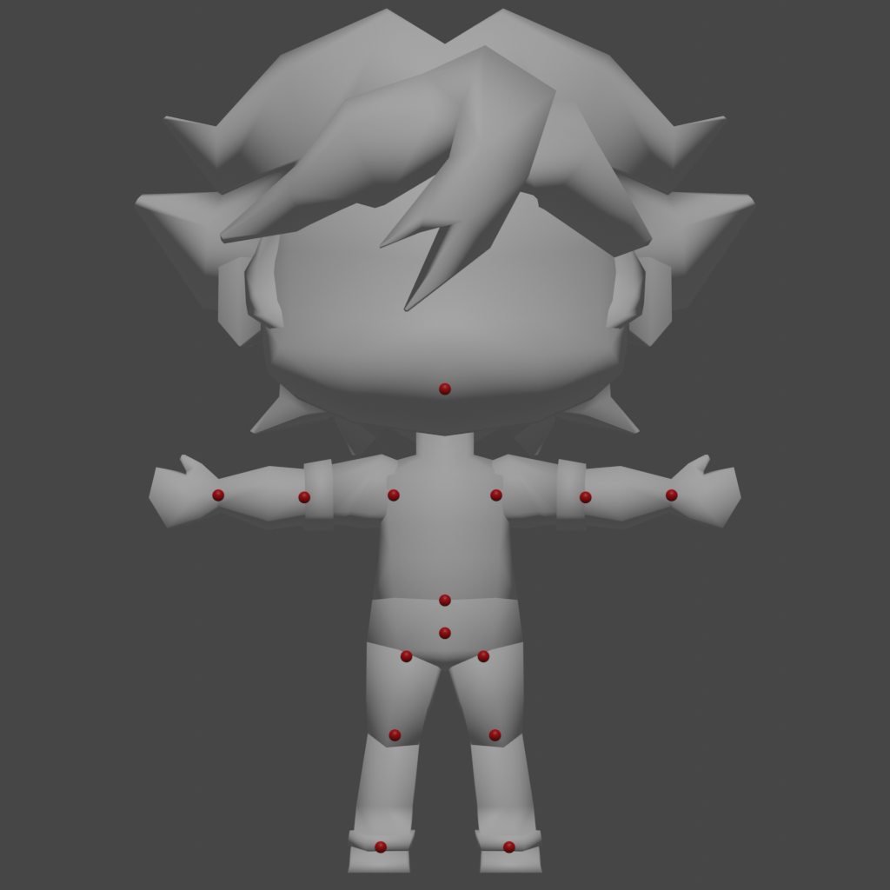
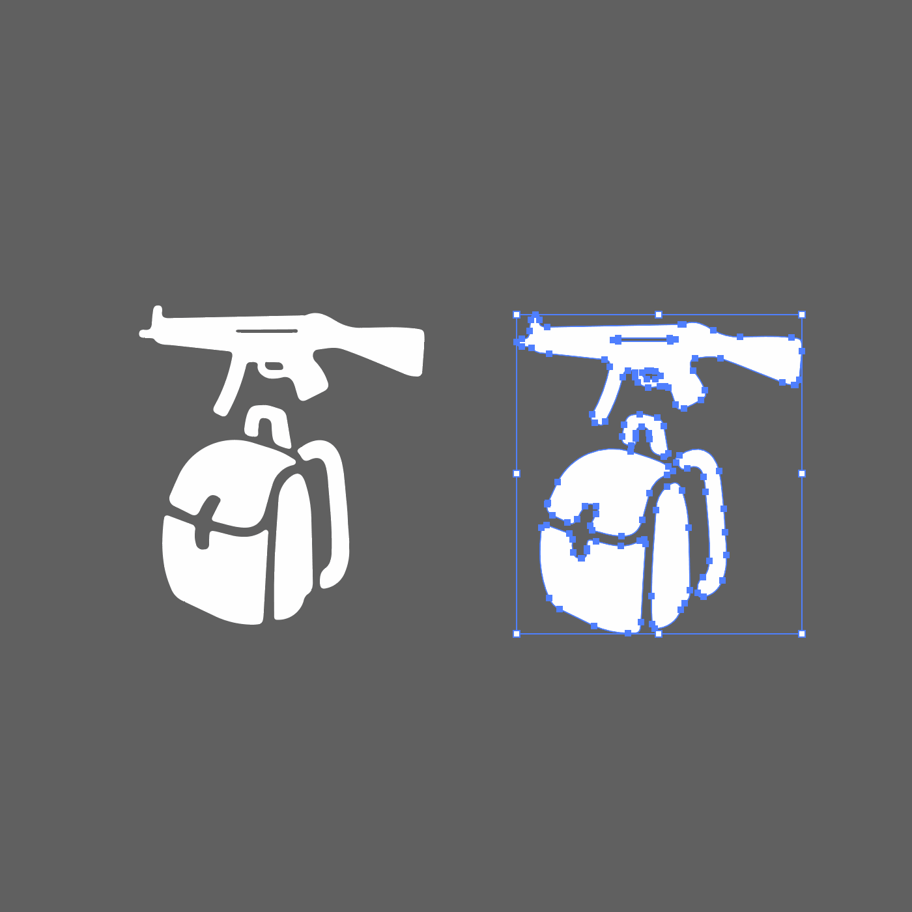

// Projects
×
×

Streamlined Icon Generation
As a Technical Designer, a large part of my job is to design and implement tools that streamline art workflows.
This mini-project allowed artists to automatically generate icons for hundreds of objects at the click of a button, saving countless hours of work for them, had they done each icon manually. It also ensured consistency across icon renders, so we could achieve a uniform feel throughout the UI elements in question.

I would later automate the importing process as well, since batch importing was not supported in our engine.
Here's the code:
########################################################
# Last updated: 08/22/2022
#
# Renders transparent png images of each mesh objects
# in the current scene using the current active camera
# and exports to a given directory
#
########################################################
import bpy
import os
#Get file path for prefixing exported .obj's
file_path = bpy.data.filepath
filepath_split = os.path.split(file_path) #list with [path, name]
desktop = os.path.join(os.path.join(os.environ['USERPROFILE']), 'Desktop')
#Export path
abs_path = desktop + "\\ReworldProjects\\MobileCreationTool\\Guns\\"
all_obj = bpy.context.scene.objects
#Uncheck all objects render
for obj in all_obj:
if(obj.type == "MESH"):
obj.hide_render = True
#Set BG transparent
bpy.context.scene.render.film_transparent = True
for obj in all_obj:
if(obj.type == "MESH"):
prefix_string = str.split(str(obj.users_collection[0].name), ".")[0]
#construct export path
export_path = abs_path + bpy.context.scene.name + "\\" + "BeautyRenders" + "\\" + prefix_string + "\\"
ext = ".png"
#make path if it doesn't exist
if not os.path.isdir(export_path):
os.makedirs(export_path)
bpy.ops.object.select_all(action="DESELECT")
obj.select_set(True)
obj.hide_render = False
bpy.context.scene.render.filepath = export_path + str.split(obj.name,".")[0] + ext
bpy.ops.render.render(write_still = 1)
obj.hide_render = True
Automated Avatar Rigging
This problem looked to tackle directly applying .fbx objects to the body parts of our characters in engine, and apply external data to the character rig in order to achieve a perfect 1:1 replacement.Since engine didn't natively allow importing single .fbx character model and rigs, we needed a way to quickly export characters piecemeal and reconstruct them in engine, while retaining joint data.
My solution was to batch export character body parts as .fbx files (yet another process that I automated) and write their joint data to a JSON file. I then used an AutoIt script to automate clicks that imported each body part to its correct position, and applied the joint data from the .json file.
Again, this solution saved innumerable hours of rigging by hand, and allowed artists to see their rigged models in-engine extremely quickly, and allowed them to make changes as needed without wasting time.
An example of a character model that needed to have its body parts, as well as position, size, and joint data recorded and swapped with the default avatar's rig in engine:
The following gif shows the new model's .fbx body parts, position, scale, and joint data being updated automatically using AutoIt in lieu of built-in functionality:
And here's an image of a lineup of avatars that were able to be constructed and tweaked expediently thanks to these scripts:
This project allowed us to absolutely demolish the overhead required to see fully ingested characters in our engine, and streamlined the character creation process substantially.
Illustrator Automation
I've also done projects to automate generating UI elements in Adobe Illustrator.
We had reached the point in our project where we had a good amount of UI design work done, and needed to start creating button icons. We had already made an icon set that we were happy with, but needed to take them through a stylization process to get them ready for ingestion.
I noticed that the process was easily automated, so I got to work doing so, and this was the result:
In automating the process, I made what would have taken an afternoon of work for 3 UI artists doing around 100 icons into half an hour of work up front, and about 10 seconds of running each icon through the automation!
View My Projects!

Welcome to My Portfolio!
This website is a showcase of projects I've had the pleasure of working on in the past. Consider it an archive of lessons and skills I've learned through UX design.
The menu button on the top left will show you a list of UX projects I have taken on, as well as detailed analyses of what I learned from them as a designer.
Below is a downloadable pdf of my resume for your viewing pleasure.
My Experience in User/Human Centered Design
I graduated from University of California San Diego in 2019 with a bachelor's degree in Cognitive Science with Specialization in Human Computer Interaction.
That's a mouthfull, I know.
My schoolwork largely involved working with other students to identify breakdowns that people encounter in their daily lives, and develop solutions to address those problems over the course of the class quarter.
All of the solutions we developed were ideated from real world research of the actual people we were developing for. Much of our work used the concept of Human Centered Design; we would sit down with people, talk to them, and observe them working in the environments relevant to our projects in order to figure out a solution that worked best for them.
We would then look over our data together and brainstorm ideas that could potentially address any breakdowns our people of interest were experiencing. These ideas then became prototypes, which we iterated repeatedly, constantly refining our product (which was sometimes software, a website, or a physical object) until we ended up with a final version that we were proud of and felt would best improve the lives of people we were designing for.
The Takeaway
Currently, the world is in need of more Human Centered Design. My mission is to find ways to make life better for everyone, and I want to find others who feel similarly. I strive to help make improvements on current designs and create new designs where they are needed to address the needs of as many stakeholders as possible. Everyone is important; everyone needs design.